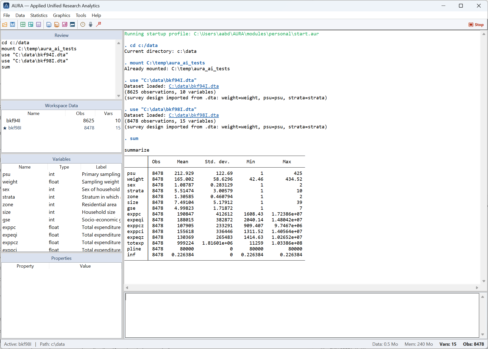
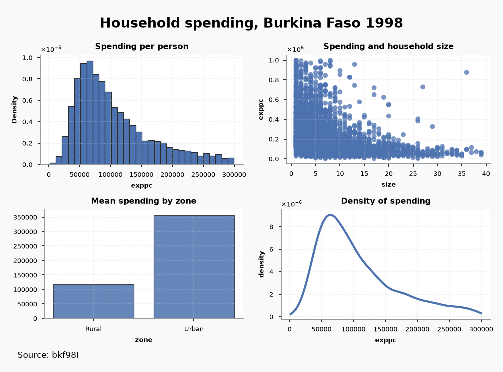
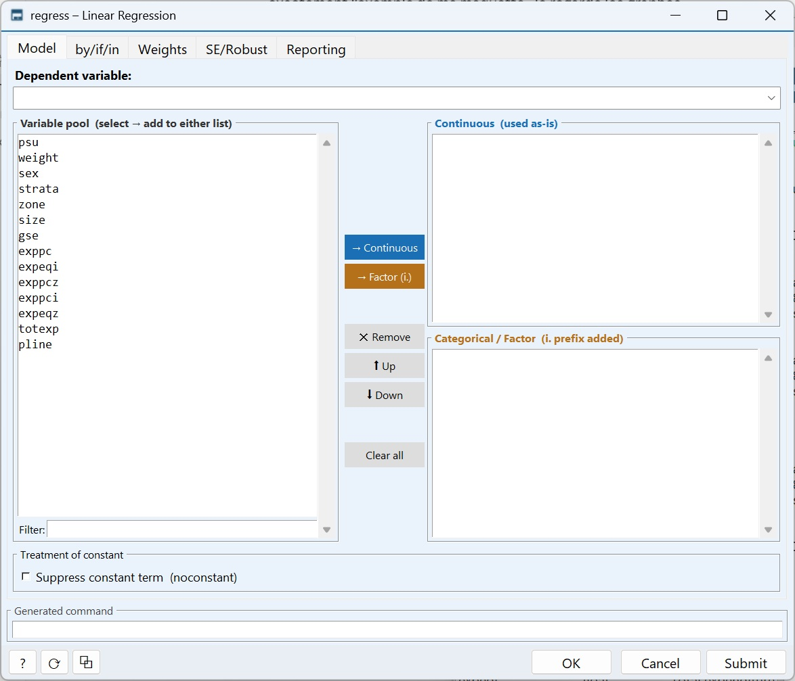
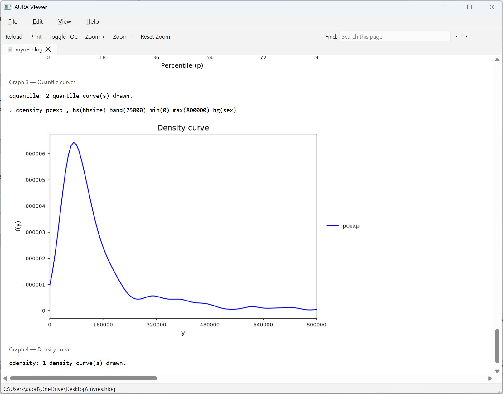
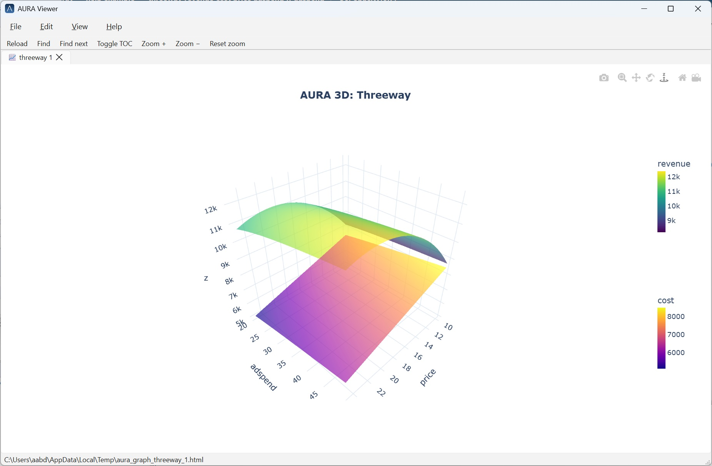
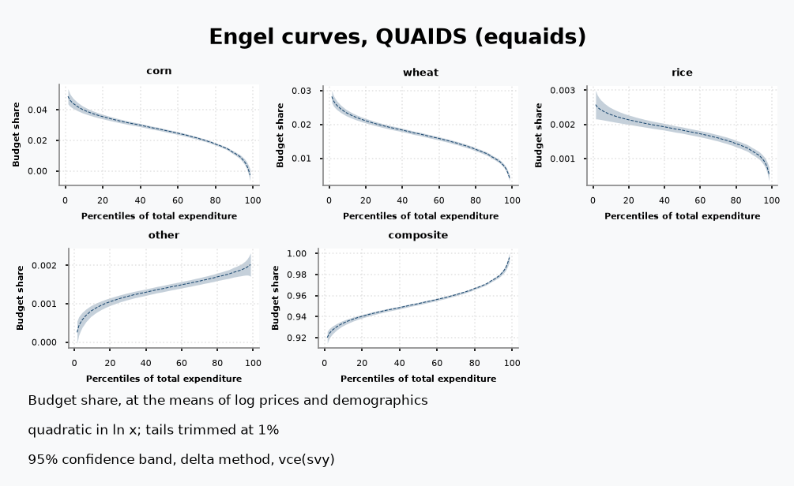
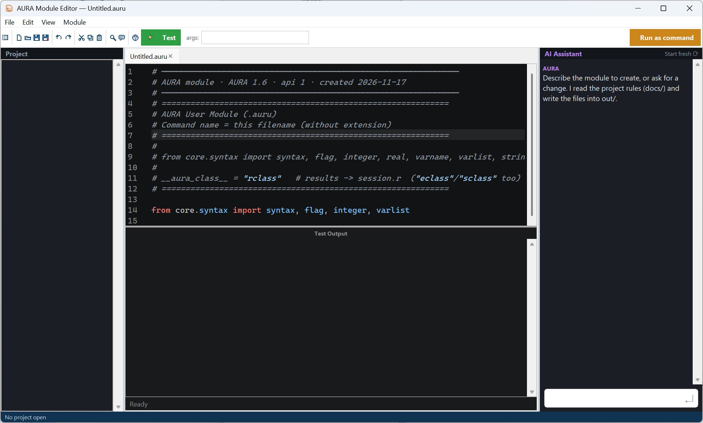
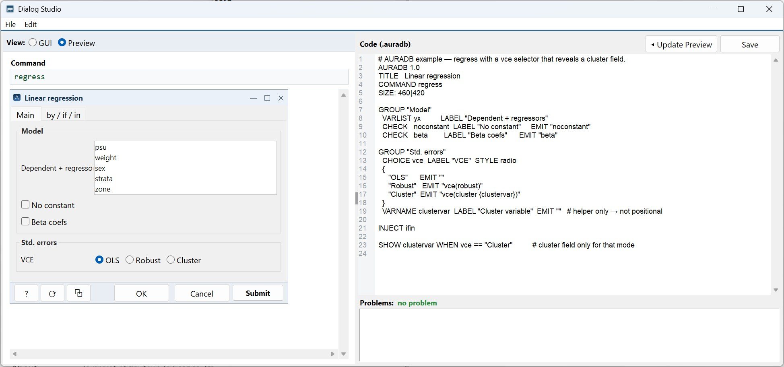
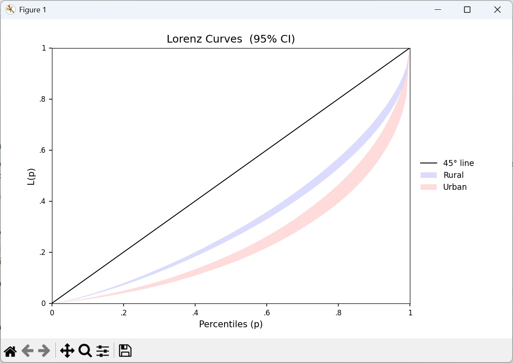
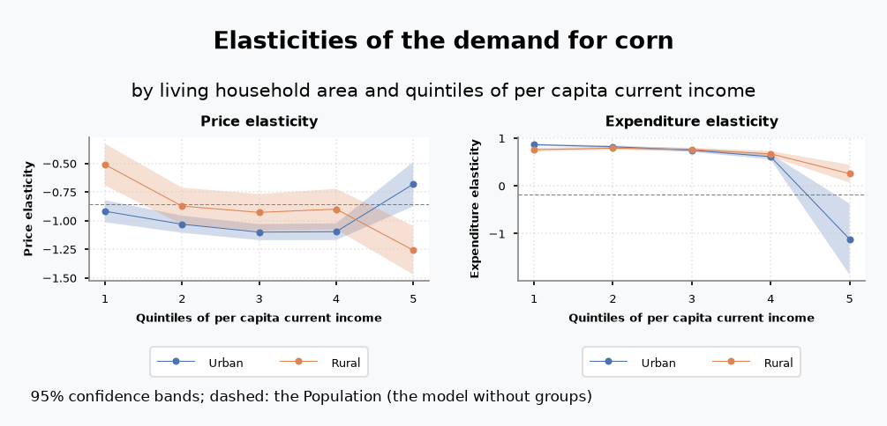

Statistics and econometrics you can read, run, and reproduce
AURA brings data management, estimation, survey statistics, poverty and inequality analysis, price-reform simulation and publication graphics into one free, command-driven environment — Python-native and reproducible.





Built on the open Python scientific stack
AURA computes with the libraries researchers already trust, and bundles them all in one installer: no Python, no pip, no environments to manage.
Introducing AURA 1.7
Estimate demand systems and their elasticities with DESYCO, cut quantile groups of exactly equal weight and estimate on them with the survey design, fit panel models by maximum likelihood or GEE, and write LaTeX tables that compile as they are.
See what's new
A look inside
Tools that work together
Commands, dialog boxes, editors and viewers share one session: what one does, the others see.


What AURA does
From raw data to the published table and graph
Every command has a dialog box that writes it for you, and help with examples you can run. See all the commands →
Estimation
regress, logit, probit, poisson, panel (xtreg, hausman) and instrumental variables — robust and clustered errors, factor variables.
Tables of results
eststo and esttab put models side by side, to the screen or to LaTeX, HTML, Word and CSV.
Survey data
svyset designs and design-based standard errors for means, totals, ratios, proportions and regression.
Poverty and inequality
The DAAP package: FGT, Gini and Lorenz, polarization, pro-poor growth, dominance and decompositions.
Price reforms
The SUBSIM package: direct and indirect effects of price and subsidy reforms on well-being, poverty and revenue.
Demand and elasticities
The DESYCO package: single-equation demand, LES, translog, AIDS, QUAIDS, EASI and unit values, with the standard errors of the elasticities.
Graphics
Publication graphs edited with the mouse, merged into figures, copied to Word as vector drawings; interactive 3-D surfaces.
Data management
A workspace of several datasets: merge, reshape, collapse, by groups, labels and formats.
Scripts that re-run
.aur scripts with loops, macros and matrices, logs with their graphs, and every menu action written as a command.
Included packages
Three complete packages, in the box

DAAP — distributive analysis
Measure poverty and inequality, compare distributions, draw curves and decompose changes, with design-based standard errors throughout.
Discover DAAP →
SUBSIM — price and subsidy reforms
What a reform of prices and subsidies does to households: well-being, poverty, inequality, quantities and public revenue, directly and through the economy.
Discover SUBSIM →
DESYCO — demand systems
How the demand of households responds to prices and income, from a single equation to complete systems, with the standard errors of the elasticities.
Discover DESYCO →Why AURA
Built for research, not for a licence
Free and open
Released under the GNU GPLv3: no licence fee, no seats. Share it with your students and colleagues.
Reproducible
Scripts re-run end to end; every menu action is a command kept in the Review panel; logs keep the text and the graphs.
Nothing to install but AURA
One self-contained installer: the machine needs neither Python, nor pip, nor any library.
Get AURA 1.7
Windows 10 / 11, 64-bit · one installer of 252 MB · free and open.
Using AURA in your work?
@software{aura2026,
title = {AURA: Applied Unified Research Analytics},
author = {Araar, Abdelkrim},
year = {2026},
note = {Version 1.7, GPL-3.0-or-later}
}